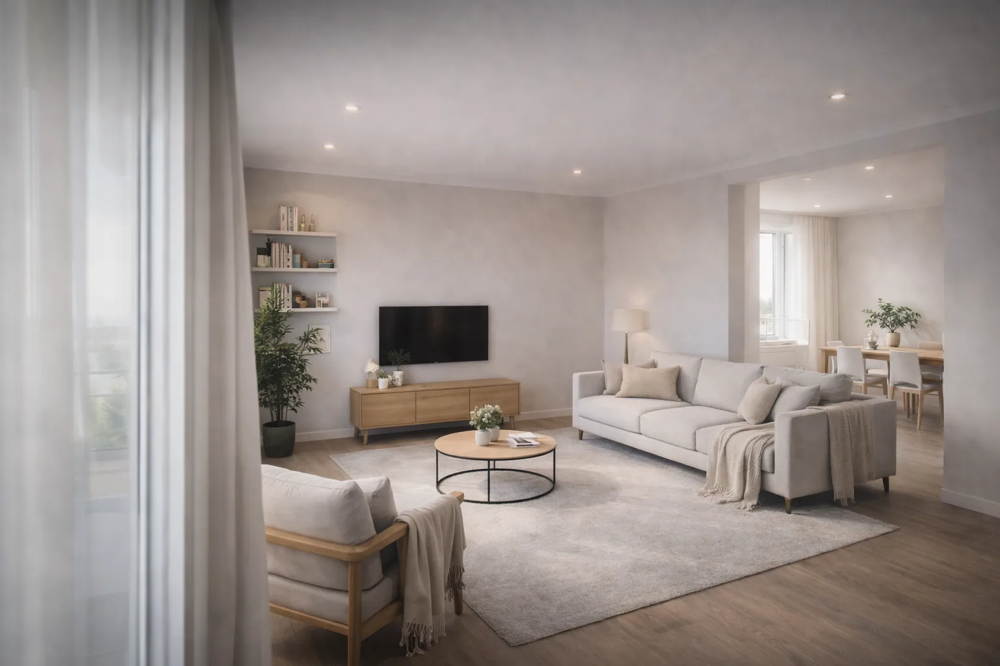
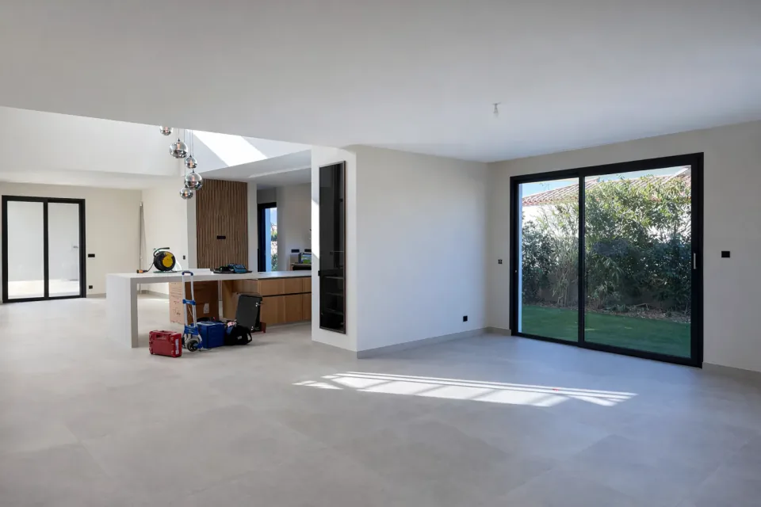

Peinture des murs et plafonds
Remise en peinture d’une pièce ou rénovation complète de votre intérieur.
- Préparation complète des supports
- Application soignée et homogène
- Finitions mat, velours ou satin
Artisan peintre à Saint-Cyprien, nous préparons et repeignons les murs et plafonds de vos appartements, maisons et résidences secondaires. Devis gratuit, réponse sous 24 h.
4,9/5 sur Google · 16 avis clients (s'ouvre dans un nouvel onglet)
Assurés en responsabilité civile professionnelle et en décennale, pour les activités déclarées à nos contrats. Attestations sur demande.

À Saint-Cyprien plage, village ou près du port, nous repeignons une pièce ou rénovons tout le logement. Le devis détaille les reprises et les finitions prévues.
Remise en peinture d’une pièce ou rénovation complète de votre intérieur.
Préparez votre appartement ou votre maison avant votre prochain séjour ou la saison.
Rafraîchissez un appartement entre deux locations ou avant un emménagement.
Un appartement pendant la préparation des murs à Saint-Cyprien et une maison après les finitions à Perpignan.


Nos engagements concrets
Objectif: un résultat durable, propre et sans mauvaise surprise.
Nous intervenons à Saint-Cyprien (66750) — secteurs plage, village et zones résidentielles proches du port — ainsi que dans les communes voisines selon planning. Pour une façade, consultez notre page ravalement de façade à Saint-Cyprien ; pour Perpignan, notre page peintre à Perpignan.
Nous vous répondons sous 24 h après réception des informations nécessaires sur le chantier. Le devis est gratuit ; selon le projet, une visite sur place peut être proposée pour le chiffrer précisément.
Oui, avec une organisation adaptée pour limiter les contraintes et maintenir un suivi clair.
Oui, selon disponibilité planning: pièce unique, plafond, couloir, reprise partielle ou rafraîchissement.
Oui, avec des produits et une préparation adaptés aux supports exposés à l'humidité et à l'air salin.
Expliquez votre besoin en quelques lignes et recevez une réponse sous 24 h.